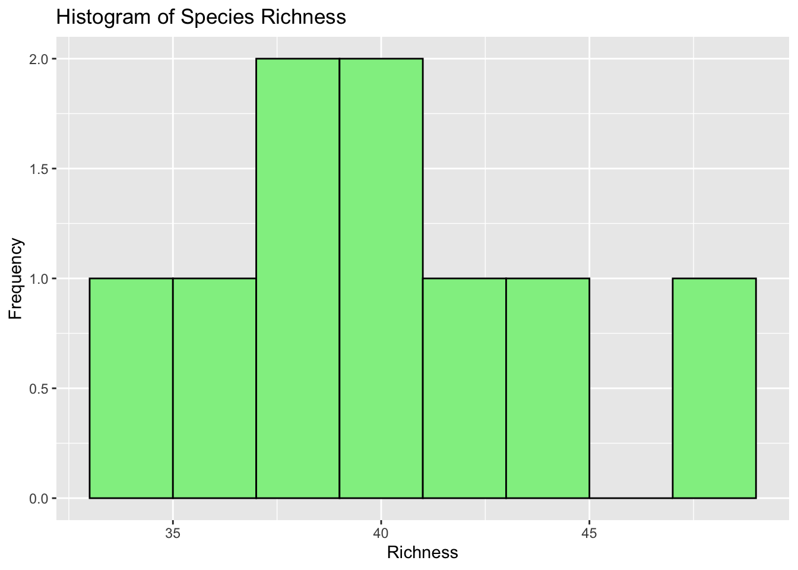

base_dir <- "~/Desktop/UVM/Master's/Spring 2025/Computational Biology/BeanBio6100/count_data"
countdata_files <- list.files(
path = base_dir,
pattern = "_count_data\\.[Cc][Ss][Vv]$", # e.g. 2015_count_data.csv
full.names = TRUE
)
print(countdata_files)## [1] "/Users/taylorbean/Desktop/UVM/Master's/Spring 2025/Computational Biology/BeanBio6100/count_data/2015_count_data.csv"
## [2] "/Users/taylorbean/Desktop/UVM/Master's/Spring 2025/Computational Biology/BeanBio6100/count_data/2016_count_data.csv"
## [3] "/Users/taylorbean/Desktop/UVM/Master's/Spring 2025/Computational Biology/BeanBio6100/count_data/2017_count_data.csv"
## [4] "/Users/taylorbean/Desktop/UVM/Master's/Spring 2025/Computational Biology/BeanBio6100/count_data/2018_count_data.csv"
## [5] "/Users/taylorbean/Desktop/UVM/Master's/Spring 2025/Computational Biology/BeanBio6100/count_data/2019_count_data.csv"
## [6] "/Users/taylorbean/Desktop/UVM/Master's/Spring 2025/Computational Biology/BeanBio6100/count_data/2020_count_data.csv"
## [7] "/Users/taylorbean/Desktop/UVM/Master's/Spring 2025/Computational Biology/BeanBio6100/count_data/2021_count_data.csv"
## [8] "/Users/taylorbean/Desktop/UVM/Master's/Spring 2025/Computational Biology/BeanBio6100/count_data/2022_count_data.csv"
## [9] "/Users/taylorbean/Desktop/UVM/Master's/Spring 2025/Computational Biology/BeanBio6100/count_data/2023_count_data.csv"Define helper functions
clean_data <- function(df) {
df %>% drop_na(scientificName, clusterSize)
}
extract_year <- function(file_path) {
str_extract(basename(file_path), "\\d{4}")
}
calculate_abundance <- function(df) {
sum(df$clusterSize, na.rm = TRUE)
}
calculate_richness <- function(df) {
n_distinct(df$scientificName)
}loop through files and build data frames
summary_stats <- data.frame()
all_year_data <- data.frame()
for (file in countdata_files) {
df <- read_csv(file, show_col_types = FALSE)
df <- clean_data(df)
# Skip files with missing species or count data
if (nrow(df) == 0 || all(is.na(df$clusterSize)) || all(is.na(df$scientificName))) {
cat("Skipping file (no valid data):", basename(file), "\n")
next
}
# Calculate year, abundance, richness
year <- as.integer(extract_year(file))
abundance <- calculate_abundance(df)
richness <- calculate_richness(df)
# Skip if either stat is missing
if (is.na(abundance) || is.na(richness)) {
cat("Skipping file (NA in abundance/richness):", basename(file), "\n")
next
}
# Debug print
cat("✅ Included — Year:", year, "| Abundance:", abundance, "| Richness:", richness, "\n")
summary_stats <- rbind(summary_stats, data.frame(
file = basename(file),
year = year,
abundance = abundance,
richness = richness
))
all_year_data <- rbind(all_year_data, data.frame(
year = year,
abundance = abundance,
richness = richness
))
}## ✅ Included — Year: 2015 | Abundance: 459 | Richness: 40
## ✅ Included — Year: 2016 | Abundance: 696 | Richness: 38
## ✅ Included — Year: 2017 | Abundance: 411 | Richness: 34
## ✅ Included — Year: 2018 | Abundance: 515 | Richness: 36
## ✅ Included — Year: 2019 | Abundance: 410 | Richness: 43
## ✅ Included — Year: 2020 | Abundance: 489 | Richness: 45
## ✅ Included — Year: 2021 | Abundance: 920 | Richness: 49
## ✅ Included — Year: 2022 | Abundance: 592 | Richness: 38
## ✅ Included — Year: 2023 | Abundance: 523 | Richness: 41Regression analysis
# Ensure numeric
all_year_data$abundance <- as.numeric(all_year_data$abundance)
all_year_data$richness <- as.numeric(all_year_data$richness)
# Remove NAs
cleaned_data <- all_year_data %>% drop_na(abundance, richness)
# Print for verification
cat("Rows in all_year_data:", nrow(all_year_data), "\n")## Rows in all_year_data: 9cat("Rows in cleaned_data:", nrow(cleaned_data), "\n")## Rows in cleaned_data: 9print(head(cleaned_data))## year abundance richness
## 1 2015 459 40
## 2 2016 696 38
## 3 2017 411 34
## 4 2018 515 36
## 5 2019 410 43
## 6 2020 489 45# Run model if data exists
if (nrow(cleaned_data) > 1) {
model <- lm(richness ~ abundance, data = cleaned_data)
summary(model)
} else {
print("Not enough valid data to run regression.")
}##
## Call:
## lm(formula = richness ~ abundance, data = cleaned_data)
##
## Residuals:
## Min 1Q Median 3Q Max
## -4.501 -3.819 1.011 3.180 5.566
##
## Coefficients:
## Estimate Std. Error t value Pr(>|t|)
## (Intercept) 32.187651 5.354615 6.011 0.000536 ***
## abundance 0.014818 0.009264 1.600 0.153738
## ---
## Signif. codes: 0 '***' 0.001 '**' 0.01 '*' 0.05 '.' 0.1 ' ' 1
##
## Residual standard error: 4.269 on 7 degrees of freedom
## Multiple R-squared: 0.2677, Adjusted R-squared: 0.163
## F-statistic: 2.558 on 1 and 7 DF, p-value: 0.1537Histogram
# Use cleaned data if available
plot_data <- if (nrow(cleaned_data) > 0) cleaned_data else all_year_data
# Ensure numeric columns
plot_data$abundance <- as.numeric(plot_data$abundance)
plot_data$richness <- as.numeric(plot_data$richness)
cat("Year:", year, "| Abundance:", abundance, "| Richness:", richness, "\n")## Year: 2023 | Abundance: 523 | Richness: 41# Filter out NA values
plot_data <- plot_data %>% filter(!is.na(abundance) & !is.na(richness))
# Debug output
cat("Rows available for plotting:", nrow(plot_data), "\n")## Rows available for plotting: 9# Plot if data exists
if (nrow(plot_data) > 0) {
ggplot(plot_data, aes(x = abundance)) +
geom_histogram(binwidth = 10, fill = "skyblue", color = "black") +
labs(title = "Histogram of Bird Abundance", x = "Abundance", y = "Frequency")
ggplot(plot_data, aes(x = richness)) +
geom_histogram(binwidth = 2, fill = "lightgreen", color = "black") +
labs(title = "Histogram of Species Richness", x = "Richness", y = "Frequency")
} else {
print("Still no valid data available to plot histograms.")
} ```